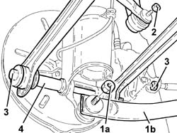
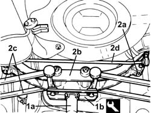
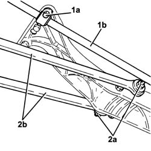
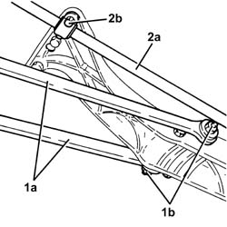
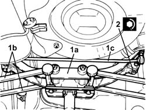
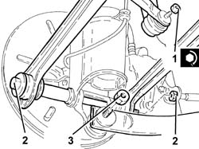
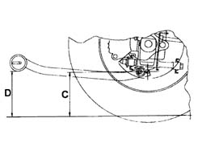
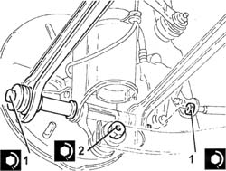

4420D42 REAR SUSPENSION BEAM - R R
- Path
- Procedures > 44 SUSPENSION AND WHEELS > 4420 REAR SUSPENSION > 4420D REAR SUSPENSION AXLE/CROSSBEAM > 4420D42 REAR SUSPENSION BEAM - R R
- Kind
- repair procedure (removal / refitting; the operation number is the code)
- Applies to
- all engines; all production periods
- Interactive page
- https://sloeber94.github.io/elrnDB-aGt/en/#/125001466
Applies to: all engines; all production periods
 Removing
Removing
 Refitting
RefittingPosition the vehicle on the ramp
Proceed with removal
Op. 4450B13 REAR WHEELS(2) R R.
1. Undo bolts (1a) securing the rear suspension longitudinal tie rod (1b) to the stub axles.
2. Undo the nuts securing the rear suspension anti-roll bar joints to the antiroll bar.
3. Undo the bolts securing the rear suspension front and rear wishbones to the rear wheel stub axles.
4. Recover the washers.

Applies to: all engines; all production periods
1. Position a hydraulic jack (1a) complete with tool (1b) beneath the rear suspension beam.
 | Name | Country |
|---|---|---|
1b | Mount | 1.870.602.001 |
2. Completely undo bolts (2a) loosened previously and remove rear suspension beam (2b) complete with wishbones (2c) and antiroll bar (2d) using a hydraulic jack for support.

Applies to: all engines; all production periods
1. Working at the bench, undo bolts (1a) and remove the anti-roll bar (1b) from the beam.
2. Undo bolts (2a) and remove rear suspension front and rear wishbones (2b) from the beam.

Applies to: all engines; all production periods
Refitting
Removing1. Working at the bench, refit the rear suspension front and rear wishbones (1a) into their seat on the beam and secure by fitting the bolts (1b) without tightening.
2. Refit antiroll bar (2a) in its seat on the beam and secure by doing up bolts (2b) without tightening.

Applies to: all engines; all production periods
1. Refit the rear suspension crossmember, complete with wishbones (1b) and anti-roll bar (1c) using a hydraulic jack fitted with the special support tool.
2. Tighten the bolts securing the rear suspension crossmember to the bodyshell to the recommended torque.
 | Fastening | Component | Ø | Value (daNm) |
|---|---|---|---|---|
2 | Bolt | REAR CROSS-BEAM | M10 | (Bodyshell side 59 72 |

Applies to: all engines; all production periods
Tighten the bolts securing the rear suspension antiroll bar to the beam to the specified torque.
| Fastening | Component | Ø | Value (daNm) |
|---|---|---|---|---|
- | - | - | - | - |
Remove the hydraulic jack and the tool used for supporting the rear suspension crossmember.
| Name | Country |
|---|---|---|
- | Mount | 1.870.602.001 |
1. Tighten the nuts securing the rear suspension antiroll bar joints to the antiroll bar to the specified torque.
| Fastening | Component | Ø | Value (daNm) |
|---|---|---|---|---|
1 | Nut | REAR ANTI-ROLL BAR PIVOTS | M10 | Anti-roll bar/shock absorber side.) 4.1 ÷ 5.0 |
2. Fit the bolts securing the rear suspension front and rear wishbones to the rear wheel stub axles without tightening them.
3. Fit the bolts fixing the rear suspension longitudinal struts to the hub stub axles without tightening them.

Applies to: all engines; all production periods
1. Place the suspension in a geometric configuration so that the difference in height between dimension D-C is 13 mm.

Applies to: all engines; all production periods
1. Tighten the bolts securing the rear suspension front and rear wishbones to the rear wheel stub axles.
| Fastening | Component | Ø | Value (daNm) |
|---|---|---|---|---|
1 | Bolt | REAR SUSPENSION./ FRONT. REAR. TRACK CONTROL ARMS. | M12 | (Rear wheel hub stub axle side.) 11.1 ÷ 13.5 |
2. Tighten the bolts securing the rear suspension tie rod to the stub axles to the specified torque.
| Fastening | Component | Ø | Value (daNm) |
|---|---|---|---|---|
2 | Bolt | REAR ANCHORAGE ROD | M12 | (Rear wheel hub stub axle side.) 11.1 ÷ 13.5 |

Applies to: all engines; all production periods
Adjust rear wheel toe-in
Op. 4450A40 REAR WHEEL GEOMETRY - CHECK USING OPTICAL EQUIPMENT.
Proceed with refitting
Op. 4450B13 REAR WHEELS(2) R R.
Remove the car from the ramps.